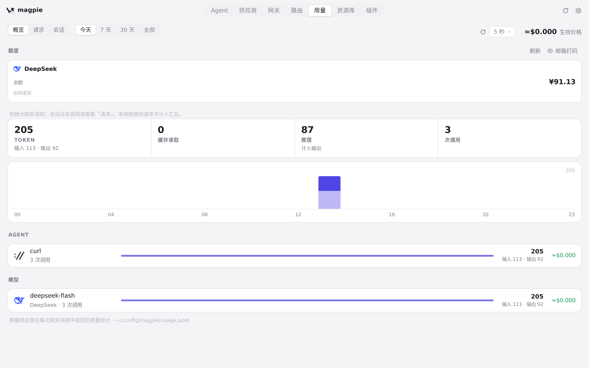
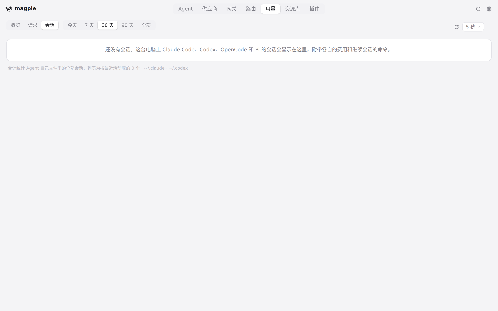
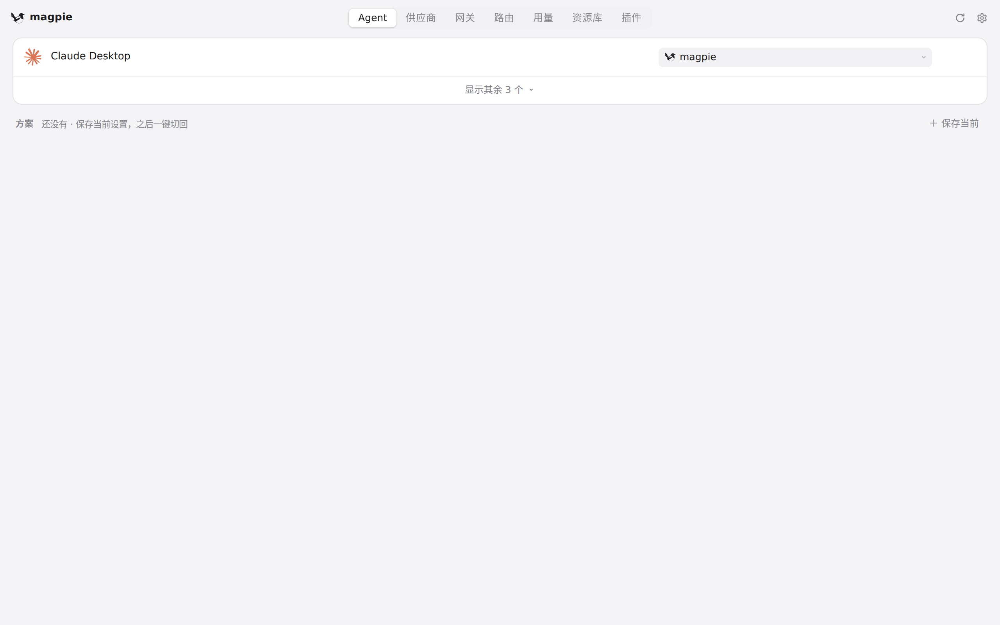
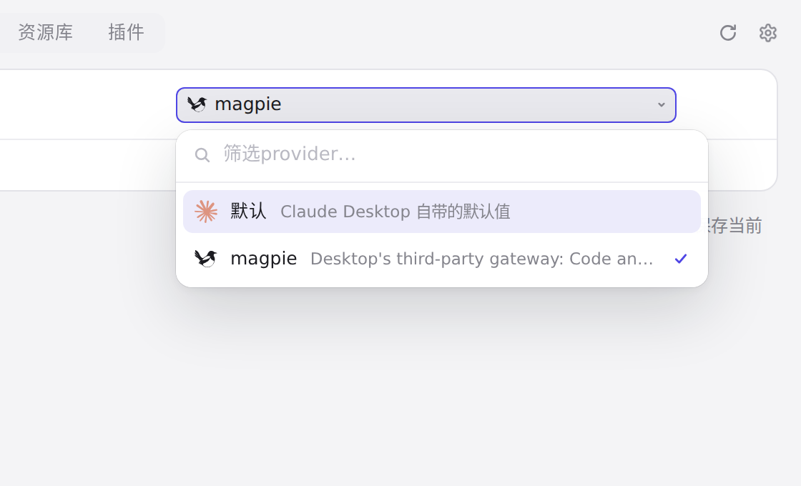
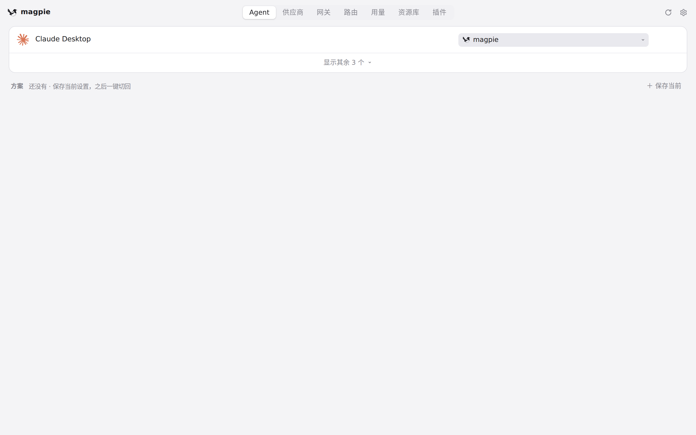

#391 界面预览
commit fe9ccba · 回到 PR · 这个 diff 给浏览器里的 magpie（body.web）补了一整套窄屏/触摸样式：顶栏标签换到单独一行并可横向滚动、表单和列表行换行、触摸目标放大到 44px、用量统计改两列、图表日期标签自动隐藏重叠项、弹层宽度收在视口内、编辑器与资源库/路由块改成单列；同时让手指惯性滚动可以继续（停手后保护恢复），触摸设备上打开模型浮层时不再自动弹键盘，并给页面视口加上安全区（viewport-fit=cover）。
红线是鼠标走过的轨迹，红色圆环是一次点击；底部文字是这一步在做什么。空格暂停，← → 逐段查看。

用量页的统计与图表 · 用量页概览：统计卡片、柱状图和它的日期标签

用量页的统计与图表 · 会话页签里的柱状图和它的日期标签

Agent 行的模型选择浮层 · Agent 列表：顶栏的标签栏和每行上的模型字段

Agent 行的模型选择浮层 · 打开的模型选择浮层

Agent 行的模型选择浮层 · 关闭浮层后的 Agent 列表